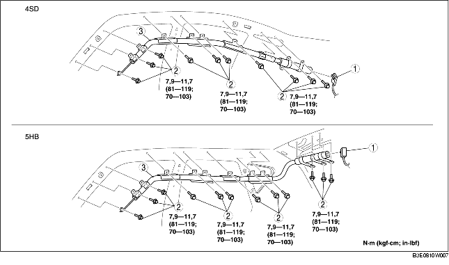

RIMOZIONE/INSTALLAZIONE MODULO AIRBAG A TENDINA
B3E081000171W01
-
Attenzione
-
• Una manipolazione impropria del modulo airbag può provocarne l'accidentale attivazione, con serio pericolo per l'incolumità personale. Leggere tutti gli avvisi legati alla manutenzione prima di maneggiare il modulo airbag. (Vedere AVVISI DI PERICOLO RIGUARDANTI LA MANUTENZIONE.) (Vedere AVVERTENZE RIGUARDANTI LA MANUTENZIONE.)
1. Posizionare il commutatore d'avviamento su LOCK.
2. Scollegare il cavo negativo della batteria e lasciar passare 1 minuto o più.
3. Rimuovere quanto segue:
-
(1) Consolle (4SD) (Vedere RIMOZIONE/INSTALLAZIONE CONSOLLE).
-
(2) Arredamento montante A (vedere RIMOZIONE/INSTALLAZIONE ARREDAMENTO MONTANTE A.)
-
(3) Batticalcagno anteriore (Vedere RIMOZIONE/INSTALLAZIONE BATTICALCAGNO ANTERIORE).
-
(4) Batticalcagno posteriore (Vedere RIMOZIONE/INSTALLAZIONE BATTICALCAGNO POSTERIORE).
-
(5) Arredamento inferiore montante B (Vedere RIMOZIONE/INSTALLAZIONE ARREDAMENTO INFERIORE MONTANTE B).
-
(6) Ancoraggio superiore della cintura di sicurezza anteriore (Vedere RIMOZIONE/INSTALLAZIONE CINTURA DI SICUREZZA ANTERIORE).
-
(7) Arredamento superiore montante B (Vedere RIMOZIONE/INSTALLAZIONE ARREDAMENTO SUPERIORE MONTANTE B).
-
(8) Sedile posteriore (vedere RIMOZIONE/INSTALLAZIONE SEDILE POSTERIORE.)
-
(9) Arredamento passaruota (vedere RIMOZIONE/INSTALLAZIONE ARREDAMENTO PASSARUOTA.)
-
(10) Arredamento superiore laterale bagagliaio (5HB) (Vedere RIMOZIONE/INSTALLAZIONE ARREDAMENTO LATERALE BAGAGLIAIO).
-
(11) Arredamento montante C (vedere RIMOZIONE/INSTALLAZIONE ARREDAMENTO MONTANTE C).
-
(12) Luce leggimappa (vedere RIMOZIONE/INSTALLAZIONE LUCE LEGGIMAPPA.)
-
(13) Luce abitacolo (vedere RIMOZIONE/INSTALLAZIONE LUCE ABITACOLO.)
-
(14) Parasole (vedere RIMOZIONE/INSTALLAZIONE ALETTA PARASOLE.)
-
(15) Maniglia d'appiglio (vedere RIMOZIONE/INSTALLAZIONE MANIGLIA D'APPIGLIO.)
-
(16) Rivestimento padiglione (vedere RIMOZIONE/INSTALLAZIONE RIVESTIMENTO PADIGLIONE.)
-
(17) Imbottitura protezione testa (Vedere RIMOZIONE/INSTALLAZIONE IMBOTTITURA PROTEZIONE TESTA).
4. Rimuovere nell'ordine indicato in tabella.

|
1
|
Connettore
|
|
2
|
Bullone
|
|
3
|
Modulo airbag a tendina
|
5. Installare in ordine inverso rispetto alla rimozione.
6. Verificare che quando il commutatore d'avviamento viene messo in posizione ON la spia del sistema airbag si accenda per circa 6 secondi e poi si spenga.
-
• Se la spia del sistema airbag non si comporta normalmente, fare riferimento alla diagnostica di bordo (del sistema airbag) e ispezionare il sistema.